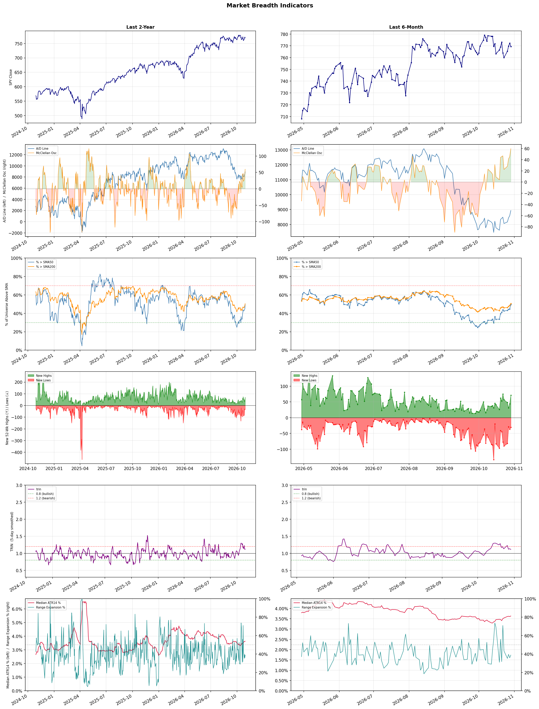

A daily market breadth and sector rotation report for active investors
| Item | Read |
|---|---|
| Regime | Neutral |
| Risk posture | Cautious |
| Universe | 1,316 stocks tracked · 71 new 52-week highs · 30 active swing setups |
| Breadth | only 49.5% of tracked stocks are above SMA50, new highs exceed new lows (71 vs 31) |
| Leadership | Health Information Services, REIT - Hotel & Motel, and Oil & Gas E&P |
| Weakest groups | Uranium, Other Industrial Metals & Mining, and Electrical Equipment & Parts |
Use this report to prioritize research and chart review; validate entries, stops, liquidity, earnings, and risk before acting.
| Item | Read |
|---|---|
| Primary read | Neutral regime with Cautious risk posture. |
| Research queue | HTFL, DOCS, HNGE, CERT, TDOC |
| Leadership focus | Health Information Services, REIT - Hotel & Motel, and Oil & Gas E&P |
| Caution list | Uranium, Other Industrial Metals & Mining, and Electrical Equipment & Parts |
| Review prompt | Check extension risk, chart location, fundamentals, valuation, and earnings before using any research row. |
| Item | Read |
|---|---|
| Primary read | 1 active risk warnings; use screen output as watchlist input only. |
| Bullish screens | HNGE, HTFL, DRH, HST, INN |
| Bearish screens | none |
| Alerts / levels | Automated trigger, stop, ATR, liquidity, reward/risk, and event-risk levels are pending future enrichment. |
| Review prompt | Open the linked chart, define trigger and invalidation, then check liquidity and event risk independently. |
Risk Posture: Cautious — screen backdrop is selective; prioritize research in top-ranked groups
Metric context: McClellan below -50 = elevated selling pressure; below -100 = washout territory. Range Expansion = share of stocks with daily range above their 20-day average. Signal Density = share of tracked names appearing in signal screens.
| Breadth Date | % > SMA50 | % > SMA200 | New Highs | New Lows | McClellan | Median Range | Avg Range | Median ATR14 | Range Expansion | Signal Density |
|---|---|---|---|---|---|---|---|---|---|---|
| 2026-10-29 | 49.5% | 50.5% | 71 | 31 | 59.7 | 3.2% | 3.8% | 3.6% | 38.8% | 2.0% |

Prior comparison date: October 28, 2026
| Metric | Prior | Current | Change |
|---|---|---|---|
| Regime | Defensive | Neutral | changed |
| Risk Posture | Defensive | Cautious | changed |
| % > SMA50 | 44.8% | 49.5% | +4.7 pts |
| % > SMA200 | 48.6% | 50.5% | +1.9 pts |
| New Highs | 44 | 71 | +27 |
| New Lows | 37 | 31 | +6 |
Top-10 industries entering: Diagnostics & Research and Discount Stores. Top-10 industries leaving: Insurance Brokers and Software - Application. New multi-signal long setups: AMGN, BHC, BNS, COF, DD, GILD, HST, HTFL, KDP, MPLX. New multi-signal short setups: none.
| Status | Tickers | Read |
|---|---|---|
| Added | AMGN, BHC, BNS, COF, DD, GILD, HST, HTFL | New technical screen matches vs prior report. |
| Removed | BA, BILI, BKNG, CAI, CRGY, FTV, GNTX, HAS | No longer present in today's technical screen matches. |
| Still Active | AER, DRH, EMR, EW, HALO, HNGE, INN, LFST | Appeared in both current and prior reports. |
| Promoted | none | Model Screen Score improved by at least 15 points. |
| Downgraded | none | Model Screen Score declined by at least 15 points. |
| Direction | Industry | ETF | Prior Rank | Current Rank | Days | Rank Change |
|---|---|---|---|---|---|---|
| Rose | Apparel Manufacturing | N/A | 71 | 5 | 42 | +66 |
| Rose | Restaurants | N/A | 83 | 18 | 35 | +65 |
| Rose | Footwear & Accessories | N/A | 85 | 22 | 42 | +63 |
| Rose | Building Products & Equipment | XHB | 84 | 25 | 42 | +59 |
| Rose | REIT - Hotel & Motel | XLRE | 56 | 2 | 42 | +54 |
Bull: The Apparel Manufacturing sector is experiencing rising relative strength due to a combination of positive investment sentiment and robust growth forecasts, as highlighted by articles from The Motley Fool and Forbes identifying top apparel stocks for 2026. Additionally, while challenges such as tariffs and geopolitical tensions may threaten specific markets like India, the overall demand for apparel remains strong, positioning the sector favorably against others. This optimism is further fueled by a competitive landscape where companies like VNCE and RL are being evaluated for their growth potential, indicating a healthy market dynamic.
Bear: While the bull thesis highlights rising relative strength and positive sentiment in the Apparel Manufacturing sector, it overlooks significant headwinds that could undermine this growth. Tariffs and geopolitical tensions, particularly in key markets like India, pose substantial risks to supply chains and profit margins, potentially stifling growth. Furthermore, the apparel industry is facing increasing competition from fast fashion and e-commerce disruptors, which could erode market share and profitability for traditional players, making the bullish outlook overly optimistic.
Verdict: The Apparel Manufacturing sector is likely experiencing rising strength due to strong consumer demand and positive investment sentiment, as evidenced by growth forecasts and interest in top apparel stocks for 2026. However, key risks such as tariffs, geopolitical tensions, and intense competition from fast fashion and e-commerce disruptors could significantly impact supply chains and profit margins, necessitating careful monitoring of these external factors for investors.
Sources: Google News
Bull: The restaurant industry is experiencing a rising relative strength due to a combination of resilient consumer spending and strategic investment opportunities highlighted by analysts. Despite recent headlines indicating volatility, such as "Restaurant Stocks Are Tumbling," the focus on long-term growth potential, as noted in "5 Best Restaurant ETFs for 2026," suggests that investors are identifying value in established brands like Darden Restaurants and Chipotle, which are positioned to outperform the broader consumer discretionary sector. Additionally, the mention of attractive yields in QSR stocks indicates that income-seeking investors are finding compelling reasons to enter the market, further bolstering the industry's relative strength.
Bear: While the bull thesis highlights resilient consumer spending and strategic opportunities, it overlooks the significant headwinds facing the restaurant industry, such as rising labor costs, supply chain disruptions, and inflationary pressures that are squeezing margins. Furthermore, the recent headlines indicating volatility, particularly the decline in restaurant stocks, suggest that investor sentiment may be shifting as economic uncertainties loom, potentially leading to reduced discretionary spending and impacting long-term growth prospects. The focus on established brands may not be enough to counteract these broader economic challenges, raising concerns about sustainability in performance.
Verdict: The restaurant industry's rising relative strength can be attributed to resilient consumer spending and strategic investments in established brands, which are seen as poised for long-term growth despite recent volatility. However, key risks include rising labor costs, supply chain disruptions, and inflationary pressures that could erode margins and dampen discretionary spending, potentially undermining the industry's performance. Investors should closely monitor these economic challenges while considering opportunities in well-positioned brands.
Sources: Google News
Bull: The Footwear & Accessories industry is experiencing a rise in relative strength primarily due to increasing consumer demand for innovative and sustainable products, as highlighted by the new EU regulations aimed at reducing waste from unsold goods. This shift towards sustainability is likely benefiting companies like Crocs, Inc., which has been recognized for its eco-friendly initiatives, and is further supported by positive market sentiment in the consumer discretionary sector, as seen in the recent Q2 results for apparel and accessories stocks. Additionally, the focus on growth potential in the industry, as indicated by articles discussing the best shoe stocks for 2026, underscores optimism about future performance driven by evolving consumer preferences.
Bear: While the bull thesis highlights rising consumer demand for sustainable products, it overlooks potential headwinds such as increasing competition and market saturation within the Footwear & Accessories industry. Additionally, the new EU regulations, while aimed at reducing waste, could impose additional costs and operational challenges for companies that may struggle to adapt quickly, potentially impacting profitability. Furthermore, economic uncertainties and shifts in consumer spending habits could dampen discretionary purchases, undermining the optimistic outlook for growth in the sector.
Verdict: The Footwear & Accessories industry is likely experiencing a rise due to heightened consumer demand for innovative and sustainable products, driven by new EU regulations that promote eco-friendly practices. However, key risks include increasing competition and potential operational challenges from adapting to these regulations, as well as economic uncertainties that may impact discretionary spending. Investors should monitor these dynamics closely while considering opportunities in companies with strong sustainability initiatives, like Crocs, Inc.
Sources: Google News
Bull: The Building Products & Equipment sector is likely experiencing rising relative strength due to increasing demand for construction and renovation activities, as highlighted by the positive sentiment in recent headlines about the best materials stocks and HVAC demand growth. Additionally, the strong outlook for companies like United Rentals suggests robust infrastructure spending and construction activity, further bolstering the sector's performance compared to others. This combination of heightened demand and favorable market conditions positions the Building Products & Equipment industry for continued growth and investor interest.
Bear: While the Building Products & Equipment sector may currently exhibit rising relative strength, several headwinds could undermine its growth potential. Increased interest rates and inflationary pressures are likely to dampen consumer spending on construction and renovation, leading to a slowdown in demand. Furthermore, the headlines may reflect short-term optimism rather than sustainable growth, as companies like United Rentals face significant challenges in maintaining their outlook amidst potential economic downturns and shifting market dynamics.
Verdict: The Building Products & Equipment sector is likely experiencing rising relative strength due to sustained demand driven by construction and renovation activities, supported by positive industry sentiment and strong performance from key players like United Rentals. However, investors should remain cautious of potential headwinds, such as rising interest rates and inflation, which could dampen consumer spending and lead to a slowdown in demand, potentially undermining the sector's growth trajectory.
Sources: Google News
Bull: The REIT - Hotel & Motel sector is experiencing rising relative strength primarily due to a robust recovery in travel and hospitality demand, as indicated by positive sentiment surrounding companies like Xenia Hotels (XHR) and the identification of top-performing hospitality REITs for the coming years. The focus on portfolio quality and strategic asset management, as highlighted in recent analyses, suggests that these REITs are well-positioned to capitalize on the ongoing rebound in tourism and business travel, driving investor confidence and interest in the sector.
Bear: While the recovery in travel and hospitality demand is certainly a positive factor, it is crucial to consider the potential headwinds facing the REIT - Hotel & Motel sector, such as rising interest rates and inflationary pressures that could dampen consumer spending. Additionally, the ongoing uncertainty in the global economy, including potential recessions and geopolitical tensions, may lead to a more cautious approach from both leisure and business travelers, undermining the bullish sentiment surrounding companies like Xenia Hotels and the overall sector. Furthermore, the complexities highlighted in Braemar's path forward suggest that not all players in this space are equally positioned to benefit, raising concerns about the sustainability of the current momentum.
Verdict: The REIT - Hotel & Motel sector is likely experiencing a rise due to a strong recovery in travel demand, bolstered by positive sentiment towards key players like Xenia Hotels and a focus on high-quality portfolios. However, investors should remain cautious of rising interest rates and inflationary pressures, which could negatively impact consumer spending and travel behavior, potentially undermining the sector's momentum. It is advisable to closely monitor economic indicators and geopolitical developments that may affect traveler confidence and spending patterns.
Sources: Google News
| Direction | Industry | ETF | Prior Rank | Current Rank | Days | Rank Change |
|---|---|---|---|---|---|---|
| Fell | Semiconductor Equipment & Materials | SOXX | 3 | 75 | 28 | -72 |
| Fell | Agricultural Inputs | N/A | 10 | 79 | 42 | -69 |
| Fell | Capital Markets | KCE | 8 | 77 | 35 | -69 |
| Fell | Gold | GDX | 8 | 74 | 42 | -66 |
| Fell | Electronic Components | XLK | 7 | 73 | 28 | -66 |
Bear: While the bull analyst attributes the recent declines in the Semiconductor Equipment & Materials sector to profit-taking and a temporary outlook adjustment, the underlying fundamentals suggest a more concerning trend. The persistent uncertainty in the chip equipment outlook, exacerbated by macroeconomic factors such as rising interest rates and potential supply chain disruptions, may indicate that the growth narrative for the semiconductor sector is losing momentum. Furthermore, the shift away from large chip stocks could reflect a broader recognition of overvaluation risks within the sector rather than a mere tactical repositioning.
Bull: The recent decline in the relative strength of the Semiconductor Equipment & Materials sector appears to be driven by profit-taking after a strong year, as indicated by headlines noting significant drops in stocks like Applied Materials and Lam Research. Additionally, the uncertainty in the chip equipment outlook, highlighted by the slide in Applied Materials shares, suggests that investors are cautious about future growth prospects, prompting a shift in focus toward materials and parts, as noted by NH-Amundi's strategy to move weight away from big chip stocks.
Verdict: The recent decline in the Semiconductor Equipment & Materials sector is primarily driven by profit-taking after a strong performance, compounded by growing investor caution regarding future growth prospects amid rising interest rates and potential supply chain disruptions. The key risk from the bear case is that this cautious sentiment may signal a broader recognition of overvaluation within the sector, suggesting that the growth narrative may be losing momentum and warranting a reevaluation of investment strategies. Investors should closely monitor macroeconomic indicators and sector valuations to navigate potential volatility.
Sources: Google News
Bear: While bullish analysts highlight long-term potential in agricultural inputs, the current landscape is marred by significant headwinds, including persistent weak monsoon demand and rising operational costs that are squeezing margins and negatively impacting earnings, as noted by Indiatimes. Moreover, the relative strength trend is falling, indicating a lack of investor confidence, and any perceived stabilization in market conditions may be overshadowed by ongoing volatility and uncertainty in agricultural markets, making it a risky time to invest rather than a buying opportunity.
Bull: The Agricultural Inputs sector is currently experiencing a decline in relative strength primarily due to pressures from weak monsoon demand and rising costs, as highlighted by Indiatimes. This has negatively impacted earnings in the agrochemicals segment, leading to a bearish sentiment despite broader positive trends in the materials sector, as noted by Seeking Alpha. However, with analysts from Morningstar and The Motley Fool identifying strong long-term potential in agricultural stocks, the current weakness may present a buying opportunity for investors looking to capitalize on future growth as market conditions stabilize.
Verdict: The Agricultural Inputs sector is experiencing a decline primarily due to weak monsoon demand and rising operational costs, which are pressuring margins and negatively affecting earnings. While some analysts see this as a potential buying opportunity due to long-term growth prospects, the key risk lies in the persistent volatility and uncertainty in agricultural markets, suggesting that investors should approach with caution and consider waiting for clearer signs of stabilization before committing capital.
Sources: Google News
Bear: While the bull analyst attributes the Capital Markets sector's declining relative strength to broader market volatility and a shift towards safer investments, this perspective overlooks the fundamental challenges facing the sector itself, such as tightening monetary policy and potential regulatory headwinds that could further suppress profitability. Additionally, the focus on sectors primed for growth suggests a fundamental rotation away from Capital Markets, indicating that investors may be losing confidence in the sector's ability to generate returns in an increasingly competitive and uncertain environment.
Bull: The Capital Markets sector is likely experiencing a decline in relative strength due to broader market volatility and rising risks highlighted by Morgan Stanley, which may be leading investors to seek safer or more stable investments in other sectors. Additionally, the focus on sectors primed for growth, as noted by J.P. Morgan and Morningstar, suggests that capital is being redirected towards more promising areas, leaving Capital Markets under pressure as it competes for investor attention amidst a backdrop of uncertainty.
Verdict: The Capital Markets sector's decline is primarily driven by tightening monetary policy and regulatory challenges that are suppressing profitability, compounded by broader market volatility prompting a shift towards safer investments. This environment raises the key risk of a fundamental rotation away from Capital Markets, as investors may increasingly lose confidence in the sector's ability to deliver attractive returns amidst heightened competition and uncertainty. To navigate this trend, investors should consider reallocating capital to sectors with stronger growth potential while closely monitoring regulatory developments that could impact Capital Markets.
Sources: Google News
Bear: While the bull analyst highlights the relative resilience of gold miners against the S&P 500, this overlooks the critical issue of rising operational costs and potential margin compression, which UBS warns could significantly impact profitability by 2027. Furthermore, the recent plunge in gold prices, driven by margin calls, indicates that investor sentiment is shifting negatively, and the current market environment may not stabilize as anticipated, leading to further declines in both gold prices and mining stock valuations. Thus, the outlook for the gold sector remains precarious, with fundamental headwinds that could overshadow any short-term performance metrics.
Bull: The recent decline in gold's relative strength can be attributed to rising cost pressures within the sector, as highlighted by UBS's concerns for 2027, which may lead to squeezed margins for gold miners. Additionally, the sharp drop in gold prices, as noted in the Canadian Mining Report, suggests that potential upside drivers are being overshadowed by margin calls, exacerbating the selloff. Despite this, the resilience of gold miners, as indicated by their performance against the S&P 500 in Q3, suggests that they may still be positioned for recovery as market conditions stabilize.
Verdict: The gold industry's recent decline is primarily driven by rising operational costs and margin pressures, which could significantly impact profitability for miners by 2027, as highlighted by UBS. The sharp drop in gold prices, exacerbated by margin calls, reflects a negative shift in investor sentiment that poses a key risk to recovery, suggesting that without stabilization in market conditions, further declines in both gold prices and mining stock valuations are likely. Investors should closely monitor cost trends and market sentiment to gauge future performance in the sector.
Sources: Google News
Bear: While the bull analyst attributes the sector's decline to temporary selling pressures and mixed earnings, the underlying issue may be a fundamental shift in demand dynamics within the electronic components industry. As technological advancements and consumer preferences evolve, traditional electronic components may face obsolescence or reduced relevance, particularly as investment flows into emerging sectors like robotics, which could further erode market confidence and lead to a prolonged downturn in the electronic components sector. Additionally, macroeconomic uncertainties, such as rising interest rates and inflation, could further dampen technology spending, exacerbating the sector's struggles.
Bull: The recent decline in the relative strength of the Electronic Components sector can be attributed to sector-wide selling pressures, as highlighted by Corning's 5.3% drop amid broader market concerns. Additionally, mixed earnings results, as indicated by the Q2 earnings review, suggest that while some companies like Benchmark (NYSE:BHE) may perform well, the overall sentiment remains cautious, leading to a lack of investor confidence in the sector. This environment could be exacerbated by macroeconomic factors influencing technology spending, particularly as highlighted in the discussions around robotics investments, which may divert attention and capital away from traditional electronic components.
Verdict: The recent decline in the Electronic Components sector is primarily driven by a fundamental shift in demand dynamics, as traditional components face increasing obsolescence amid rising investments in emerging technologies like robotics. This trend is compounded by macroeconomic uncertainties, including rising interest rates and inflation, which could further suppress technology spending. Investors should closely monitor these evolving market conditions and consider reallocating capital to sectors with stronger growth potential to mitigate risks associated with the ongoing downturn in electronic components.
Sources: Google News
| Industry | Rank | ETF | 7d | 14d | 28d | 42d | Chg 42d | Size | 20D | 60D | Composite | Active Setups |
|---|---|---|---|---|---|---|---|---|---|---|---|---|
| Health Information Services | 1 | N/A | 9 | 6 | 5 | 4 | +3 | 12 | 13.5% | 48.3% | 0.943 | 0 |
| REIT - Hotel & Motel | 2 | XLRE | 8 | 11 | 11 | 56 | +54 | 9 | 13.5% | 7.0% | 0.938 | 0 |
| Oil & Gas E&P | 3 | XOP | 7 | 18 | 30 | 15 | +12 | 26 | 14.2% | 23.5% | 0.936 | 1 |
| Medical Care Facilities | 4 | IHF | 13 | 16 | 21 | 7 | +3 | 9 | 18.1% | 14.7% | 0.912 | 1 |
| Apparel Manufacturing | 5 | N/A | 11 | 12 | 28 | 71 | +66 | 6 | 20.8% | 12.4% | 0.895 | 0 |
| Diagnostics & Research | 6 | N/A | 22 | 9 | 2 | 2 | -4 | 16 | 5.7% | 24.6% | 0.876 | 1 |
| Oil & Gas Integrated | 7 | XLE | 4 | 4 | 9 | 5 | -2 | 10 | 8.4% | 18.8% | 0.873 | 1 |
| Apparel Retail | 8 | XRT | 10 | 5 | 10 | 26 | +18 | 8 | 10.6% | 9.4% | 0.870 | 1 |
| Household & Personal Products | 9 | XLP | 2 | 2 | 26 | 31 | +22 | 12 | 12.6% | 8.4% | 0.867 | 1 |
| Discount Stores | 10 | XRT | 3 | 3 | 16 | 25 | +15 | 7 | 9.2% | 7.1% | 0.852 | 0 |
Rank columns (7d–42d) show the industry's rank that many trading days ago — lower is stronger. Chg 42d = rank change vs 42 trading days ago — positive means the industry moved up. 20D and 60D are the mean stock return within the industry over that period. Active Setups: count of today's swing-trade candidates from this industry appearing across all signal screens.
| Industry | Rank | ETF | 7d | 14d | 28d | 42d | Chg 42d | Size | 20D | 60D | Composite | Active Setups |
|---|---|---|---|---|---|---|---|---|---|---|---|---|
| Uranium | 87 | URA | 87 | 87 | 82 | 82 | -5 | 6 | -10.5% | -22.9% | 0.044 | 0 |
| Other Industrial Metals & Mining | 86 | N/A | 85 | 83 | 76 | 62 | -24 | 21 | -14.9% | -24.0% | 0.048 | 0 |
| Electrical Equipment & Parts | 85 | XLI | 86 | 86 | 46 | 57 | -28 | 12 | -12.0% | -26.0% | 0.096 | 0 |
| Auto Parts | 84 | N/A | 72 | 73 | 50 | 51 | -33 | 19 | -10.0% | -18.6% | 0.117 | 0 |
| REIT - Mortgage | 83 | N/A | 84 | 84 | 85 | 68 | -15 | 11 | -4.0% | -18.8% | 0.121 | 0 |
| Solar | 82 | TAN | 76 | 79 | 80 | 86 | +4 | 8 | -6.5% | -25.7% | 0.123 | 0 |
| Gambling | 81 | N/A | 81 | 85 | 84 | 70 | -11 | 5 | -5.9% | -19.6% | 0.154 | 0 |
| Utilities - Renewable | 80 | N/A | 79 | 81 | 60 | 80 | 0 | 6 | -11.7% | -19.7% | 0.158 | 0 |
| Agricultural Inputs | 79 | N/A | 78 | 75 | 83 | 10 | -69 | 5 | -13.5% | -15.0% | 0.161 | 0 |
| Aerospace & Defense | 78 | ITA | 83 | 82 | 64 | 77 | -1 | 26 | -6.5% | -21.4% | 0.169 | 0 |
Rank columns (7d–42d) show the industry's rank that many trading days ago — lower is stronger. Chg 42d = rank change vs 42 trading days ago — positive means the industry moved up. 20D and 60D are the mean stock return within the industry over that period. Active Setups: count of today's swing-trade candidates from this industry appearing across all signal screens.
These are research candidates from top-ranked stocks, capped at five names per industry to avoid over-concentration. Returns shown (60D, 120D, 250D) are historical — they reflect where prices have already moved, not forward expectations. Extension Risk flags names that may require extra patience or a better entry point. They are not buy signals.
Chart: TV = TradingView chart (opens in browser); PDF = local chart file (if downloaded).
| Ticker | Name | Industry | Industry Rank | Market Cap | 60D Hist | 120D Hist | 250D Hist | Extension Risk | Research Reason | Chart |
|---|---|---|---|---|---|---|---|---|---|---|
| HTFL | Heartflow | Health Information Services | 1 | N/A | 122.8% | 105.1% | 65.5% | Very extended | Top-ranked in industry; very extended | TV |
| DOCS | Doximity | Health Information Services | 1 | N/A | 55.5% | 29.4% | -48.9% | Extended | Top-ranked in industry; extended | TV |
| HNGE | Hinge Health | Health Information Services | 1 | N/A | 44.7% | 108.7% | 140.2% | Extended | Top-ranked in industry; extended | TV |
| CERT | Certara | Health Information Services | 1 | N/A | 39.8% | 77.5% | -1.4% | Constructive | Top-ranked in industry | TV |
| TDOC | Teladoc Health | Health Information Services | 1 | N/A | 26.0% | 20.4% | -0.1% | Constructive | Top-ranked in industry | TV |
| APLE | Apple Hospitality REIT Inc | REIT - Hotel & Motel | 2 | N/A | 14.9% | 36.6% | 77.4% | Constructive | Top-ranked in industry | TV |
| PEB | Pebblebrook Hotel Trust | REIT - Hotel & Motel | 2 | N/A | 13.8% | 47.7% | 103.9% | Constructive | Top-ranked in industry | TV |
| DRH | DIAMONDROCK HOSPITALITY CO | REIT - Hotel & Motel | 2 | N/A | 10.0% | 36.2% | 91.3% | Constructive | Top-ranked in industry | TV |
| INN | Summit Hotel Properties Inc | REIT - Hotel & Motel | 2 | N/A | 8.0% | 35.2% | 48.0% | Constructive | Top-ranked in industry | TV |
| RLJ | RLJ Lodging Trust | REIT - Hotel & Motel | 2 | N/A | 4.6% | 45.8% | 96.0% | Constructive | Top-ranked in industry | TV |
| APA | Apache | Oil & Gas E&P | 3 | N/A | 49.4% | 46.6% | 136.5% | Constructive | Top-ranked in industry | TV |
| NOG | Northern Oil & Gas | Oil & Gas E&P | 3 | N/A | 43.4% | 24.1% | 41.1% | Constructive | Top-ranked in industry | TV |
| RRC | Range Resources | Oil & Gas E&P | 3 | N/A | 41.6% | 33.7% | 57.3% | Constructive | Top-ranked in industry | TV |
| OVV | Ovintiv | Oil & Gas E&P | 3 | N/A | 24.1% | 25.0% | 98.5% | Constructive | Top-ranked in industry | TV |
| AR | Antero Resources | Oil & Gas E&P | 3 | N/A | 20.0% | 14.6% | 37.2% | Constructive | Top-ranked in industry | TV |
| SGRY | Surgery Partners | Medical Care Facilities | 4 | N/A | 51.5% | 60.7% | 4.7% | Extended | Top-ranked in industry; extended | TV |
| OPCH | Option Care Health | Medical Care Facilities | 4 | N/A | 34.4% | 55.3% | 21.5% | Constructive | Top-ranked in industry | TV |
| LFST | LifeStance Health | Medical Care Facilities | 4 | N/A | 31.5% | 77.1% | 177.7% | Constructive | Top-ranked in industry | TV |
| HCA | HCA Healthcare | Medical Care Facilities | 4 | N/A | 16.9% | 10.3% | 3.1% | Constructive | Top-ranked in industry | TV |
| ACHC | Acadia Healthcare | Medical Care Facilities | 4 | N/A | -8.6% | 17.0% | 35.1% | Lagging | Top-ranked in industry; lagging | TV |
These are technical screen matches from existing signal files. They are not trade recommendations. Trigger, stop, ATR, liquidity, reward/risk, and event risk still require separate validation until those inputs are available.
Model Screen Score is weighted by signal count, industry rank, freshness, and setup type. It is not a probability of profit, expected return, or suitability rating. Industry cap: max 3 candidates per industry.
Signal glossary: Momentum Pullback = stock in an uptrend that has pulled back 10–30% and shows re-entry conditions. MA Compression = short- and long-term moving averages converging, often preceding a directional move. Three-Day Up/Down = three consecutive closes in the same direction. New 52Wk High/Low = price reached a new annual extreme.
Chart: TV = TradingView chart (opens in browser); PDF = local chart file (if downloaded).
| Ticker | Industry | Setups | Close | Industry Rank | Signal Count | Model Screen Score | Reason | Chart |
|---|---|---|---|---|---|---|---|---|
| HNGE | Health Information Services | New 52Wk High; Three-Day Up | 116.90 | 1 | 2 | 100 | Multi-signal; top industry breakout | TV |
| HTFL | Health Information Services | New 52Wk High; Three-Day Up | 60.53 | 1 | 2 | 100 | Multi-signal; top industry breakout | TV |
| DRH | REIT - Hotel & Motel | New 52Wk High; Three-Day Up | 14.46 | 2 | 2 | 100 | Multi-signal; top industry breakout | TV |
| HST | REIT - Hotel & Motel | New 52Wk High; Three-Day Up | 25.70 | 2 | 2 | 100 | Multi-signal; top industry breakout | TV |
| INN | REIT - Hotel & Motel | New 52Wk High; Three-Day Up | 7.27 | 2 | 2 | 100 | Multi-signal; top industry breakout | TV |
| LFST | Medical Care Facilities | New 52Wk High; Three-Day Up | 13.64 | 4 | 2 | 93 | Multi-signal; top industry breakout | TV |
| NTRA | Diagnostics & Research | New 52Wk High; Three-Day Up | 436.00 | 6 | 2 | 93 | Multi-signal; top industry breakout | TV |
| TMO | Diagnostics & Research | New 52Wk High; Three-Day Up | 709.18 | 6 | 2 | 93 | Multi-signal; top industry breakout | TV |
| AMGN | Drug Manufacturers - General | New 52Wk High; Three-Day Up | 460.73 | 13 | 2 | 85 | Multi-signal; new-high strength | TV |
| GILD | Drug Manufacturers - General | New 52Wk High; Three-Day Up | 165.61 | 13 | 2 | 85 | Multi-signal; new-high strength | TV |
| NDAQ | Financial Data & Stock Exchanges | New 52Wk High; Three-Day Up | 105.60 | 14 | 2 | 85 | Multi-signal; new-high strength | TV |
| MPLX | Oil & Gas Midstream | MA Compression; Three-Day Up | 59.89 | 15 | 2 | 80 | Multi-signal; compression setup | TV |
| AER | Rental & Leasing Services | New 52Wk High; Three-Day Up | 159.71 | 16 | 2 | 77 | Multi-signal; new-high strength | TV |
| SG | Restaurants | New 52Wk High; Three-Day Up | 11.41 | 18 | 2 | 77 | Multi-signal; new-high strength | TV |
| BHC | Drug Manufacturers - Specialty & Generic | New 52Wk High; Three-Day Up | 8.91 | 21 | 2 | 77 | Multi-signal; new-high strength | TV |
| VTRS | Drug Manufacturers - Specialty & Generic | New 52Wk High; Three-Day Up | 19.20 | 21 | 2 | 77 | Multi-signal; new-high strength | TV |
| NIQ | Software - Application | New 52Wk High; Three-Day Up | 20.37 | 23 | 2 | 77 | Multi-signal; new-high strength | TV |
| STRC | Software - Application | New 52Wk High; Three-Day Up | 99.99 | 23 | 2 | 77 | Multi-signal; new-high strength | TV |
| KDP | Beverages - Non-Alcoholic | New 52Wk High; Three-Day Up | 35.30 | 24 | 2 | 77 | Multi-signal; new-high strength | TV |
| TXNM | Utilities - Regulated Electric | MA Compression; New 52Wk High | 58.65 | 27 | 2 | 75 | Multi-signal; new-high strength | TV |
| EW | Medical Devices | MA Compression; Three-Day Up | 94.44 | 20 | 2 | 72 | Multi-signal; compression setup | TV |
| W | Internet Retail | New 52Wk High; Three-Day Up | 120.12 | 44 | 2 | 65 | Multi-signal; new-high strength | TV |
| HALO | Biotechnology | New 52Wk High; Three-Day Up | 131.18 | 45 | 2 | 65 | Multi-signal; new-high strength | TV |
| ROIV | Biotechnology | Momentum Pullback; Three-Day Up | 37.52 | 45 | 2 | 65 | Multi-signal; pullback setup | TV |
| BNS | Banks - Diversified | New 52Wk High; Three-Day Up | 95.41 | 58 | 2 | 65 | Multi-signal; new-high strength | TV |
| TD | Banks - Diversified | New 52Wk High; Three-Day Up | 127.22 | 58 | 2 | 65 | Multi-signal; new-high strength | TV |
| DD | Specialty Chemicals | MA Compression; Three-Day Up | 140.58 | 41 | 2 | 60 | Multi-signal; compression setup | TV |
| COF | Credit Services | MA Compression; Three-Day Up | 208.74 | 57 | 2 | 60 | Multi-signal; compression setup | TV |
| WFC | Banks - Diversified | MA Compression; Three-Day Up | 84.81 | 58 | 2 | 60 | Multi-signal; compression setup | TV |
| EMR | Specialty Industrial Machinery | New 52Wk High; Three-Day Up | 170.74 | 66 | 2 | 55 | Multi-signal; new-high strength | TV |
How To Use This Report
| Use | Purpose |
|---|---|
| Market map | Start with breadth, regime, risk warnings, and what changed since the prior report. |
| Industry scan | Use leading, deteriorating, rising, and declining industries to focus research. |
| Research queue | Treat long-term candidates as names for deeper fundamental, valuation, and chart review. |
| Technical review | Treat bullish and bearish screen matches as watchlist inputs that require independent trigger, stop, liquidity, and event-risk checks. |
| Source follow-up | Use chart links and source files to verify raw inputs before relying on any row. |
What This Report Is Not
| Not | Meaning |
|---|---|
| Investment advice | The report does not evaluate personal objectives, risk tolerance, tax situation, account type, or suitability. |
| Buy/sell recommendation | Named tickers are research candidates or screen matches, not recommendations to transact. |
| Price target | The report does not provide fair value estimates, targets, or expected returns. |
| Trade plan | Trigger, stop, sizing, reward/risk, liquidity, and event-risk review remain separate user work. |
| Performance claim | Model Screen Score is not validated historical performance or a forecast of future results. |
| Item | Note |
|---|---|
| Version | Daily Report Methodology v1 |
| Model Screen Score | Screen-fit rank based on signal count, industry rank, freshness, and setup type. |
| Not predictive proof | The score is not expected return, probability of profit, historical validation, or suitability analysis. |
| Industry ranks | Composite industry ranks use existing daily ranking outputs and historical rank columns when available. |
| Research candidates | Long-term rows are research candidates from ranked stocks and leading industries, with historical returns labeled as historical only. |
| Technical matches | Bullish and bearish rows are screen matches requiring independent chart, trigger, stop, liquidity, and event-risk review. |
| Source | Status | Rows | Path |
|---|---|---|---|
| Market breadth | present | 1254 | breadth_20261029.csv |
| Industry composite rankings | present | 87 | all_industry_composite_20261029.csv |
| Top ranked stocks | present | 115 | top_ranked_composite_20261029.csv |
| All ranked stocks | present | 1316 | all_stocks_composite_sorted_20261029.csv |
| Top momentum pullbacks | present | 1468 | top_momentum_pullbacks_20261029.csv |
| MA compression | present | 1468 | ma_compression_stocks_20261029.csv |
| Three-day up/down | present | 170 | three_day_up_down_stocks_20261029.csv |
| New 52-week members | present | 102 | breadth_new_52wk_members_20261029.csv |
This report is generated from automated technical screens and is for informational and research purposes only. It is not investment advice, a solicitation, or a recommendation to buy or sell any security. Past performance is not indicative of future results. You are solely responsible for your own investment decisions. Consult a licensed financial advisor before acting on any information herein.